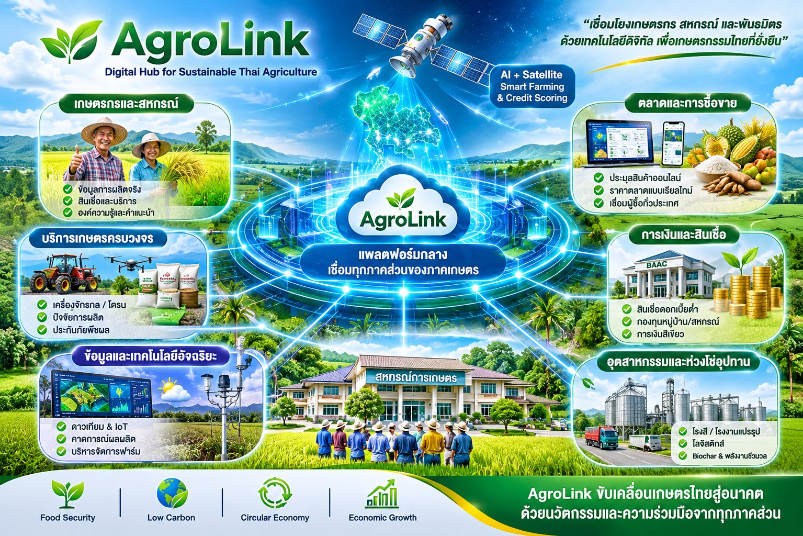

เกษตรกร สหกรณ์ ผู้ให้บริการ ผู้ซื้อ สถาบันการเงิน และภาครัฐ ต่างบริหารข้อมูลและกิจกรรมของตนเองในพอร์ทัลที่ออกแบบมาสำหรับงานนั้น เมื่อมีธุรกรรมร่วมกัน ข้อมูลจะส่งต่อถึงกันโดยอัตโนมัติ ไม่ต้องกรอกซ้ำ

แต่ละองค์กรบริหารข้อมูล กิจกรรม และเจ้าหน้าที่ของตนเองในพอร์ทัลเฉพาะ เช่น สหกรณ์โคนมดูแลรอบรับนมและรอบจ่ายเงิน ผู้ให้บริการเครื่องจักรกลดูแลตารางงาน
สมาชิกเข้าสู่ระบบครั้งเดียว ระบบจะแสดงเฉพาะพอร์ทัลที่บัญชีนั้นมีสิทธิ์ องค์กรที่ทำหลายธุรกิจ เช่น สหกรณ์ที่มีทั้งพืชและโคนม สลับพอร์ทัลได้ทันที
คำสั่งซื้อ สัญญา การจองบริการ และการส่งมอบ ส่งต่อระหว่างพอร์ทัลของคู่ค้าโดยอัตโนมัติ ข้อมูลส่วนอื่นจะเปิดให้อีกฝ่ายเห็นเฉพาะเมื่อเจ้าของข้อมูลยินยอม
ทุกพอร์ทัลใช้ข้อมูลกลางชุดเดียวกัน ทั้งภาพดาวเทียม IoT และ AI วิเคราะห์แปลง จึงไม่มีใครต้องสร้างข้อมูลพื้นฐานขึ้นใหม่
แต่ละฝ่ายทำงานในพอร์ทัลของตนเอง แต่ผลลัพธ์ส่งต่อถึงกันเป็นห่วงโซ่เดียว
เกษตรกรบันทึกแปลงและกิจกรรม สหกรณ์ยืนยันข้อมูลและติดตามแปลงด้วยภาพดาวเทียม ระบบคำนวณคะแนนเครดิต แล้วผู้ปล่อยกู้พิจารณาคำขอโดยเห็นเฉพาะข้อมูลที่เกษตรกรยินยอม
สหกรณ์ชั่งรับนมและตรวจคุณภาพ ราคาคำนวณตามคุณภาพ โรงงานยืนยันการรับนมในพอร์ทัลของตน เงินค่านมหักกลบตามลำดับแล้วโอนผ่าน ธ.ก.ส. สมาชิกเห็นยอดและได้รับแจ้งเตือนในมือถือ
สหกรณ์รวมความต้องการปุ๋ยของสมาชิก (Group Buy) แล้วเปิดประมูลซื้อ ผู้จำหน่ายเสนอราคาในพอร์ทัลของตน ผู้เสนอต่ำสุดได้สัญญาและส่งของตามคำสั่งซื้อ
ตั้งแต่ไถ ฉีดพ่นด้วยโดรน เกี่ยว ขนส่ง จนถึงตากและเก็บผลผลิต ผู้ให้บริการแต่ละรายรับงานและจัดตารางในพอร์ทัลของตนเอง
ผู้รับซื้อระบุสเปคชีวมวลที่ต้องการ ผู้ผลิตเสนอขายจากพอร์ทัลของตน ลดการเผาในแปลงและเพิ่มรายได้ให้ชุมชน
หน่วยงานรัฐเห็นตัวเลขรวมรายพื้นที่ และเห็นรายองค์กรเฉพาะที่องค์กรนั้นยินยอม เช่น สัญญาณนมล้นตลาดล่วงหน้า 30–90 วัน
เข้าสู่ระบบด้วยบัญชีเดียว ระบบจะพาไปยังพอร์ทัลที่ท่านมีสิทธิ์ องค์กรที่ยังไม่มีบัญชี ติดต่อทีม AgroLink เพื่อลงทะเบียนและยืนยันตัวตนองค์กร